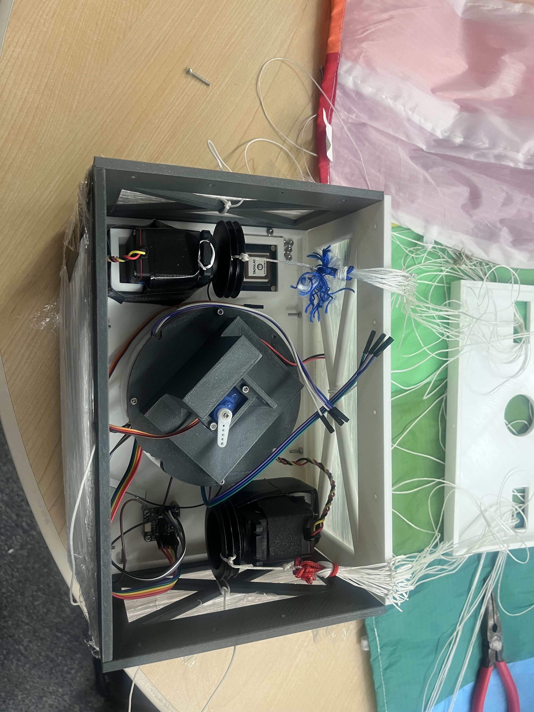
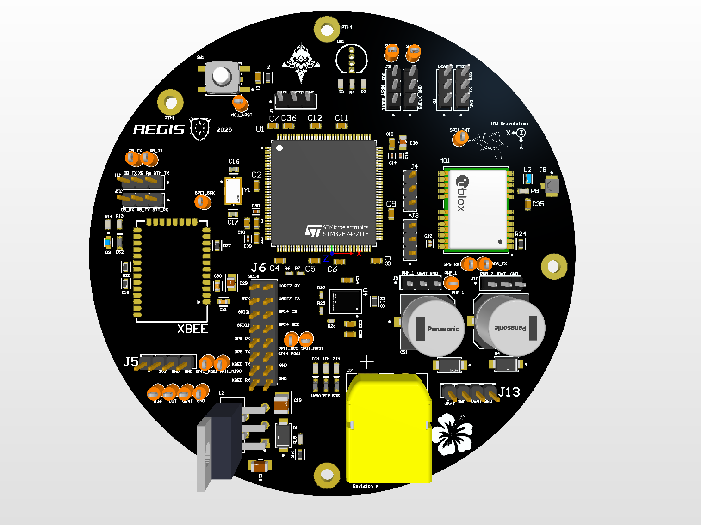
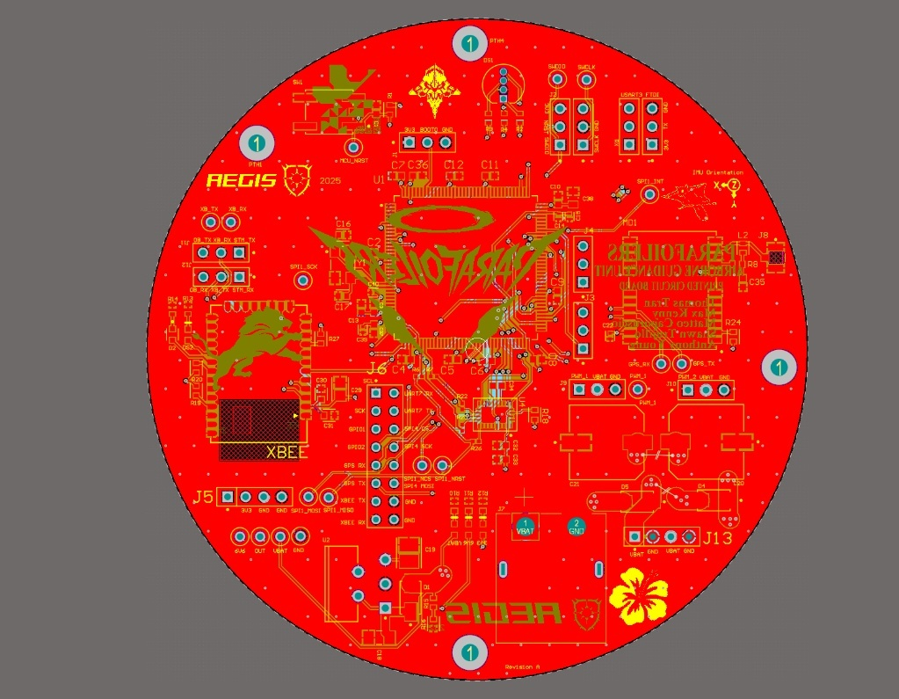
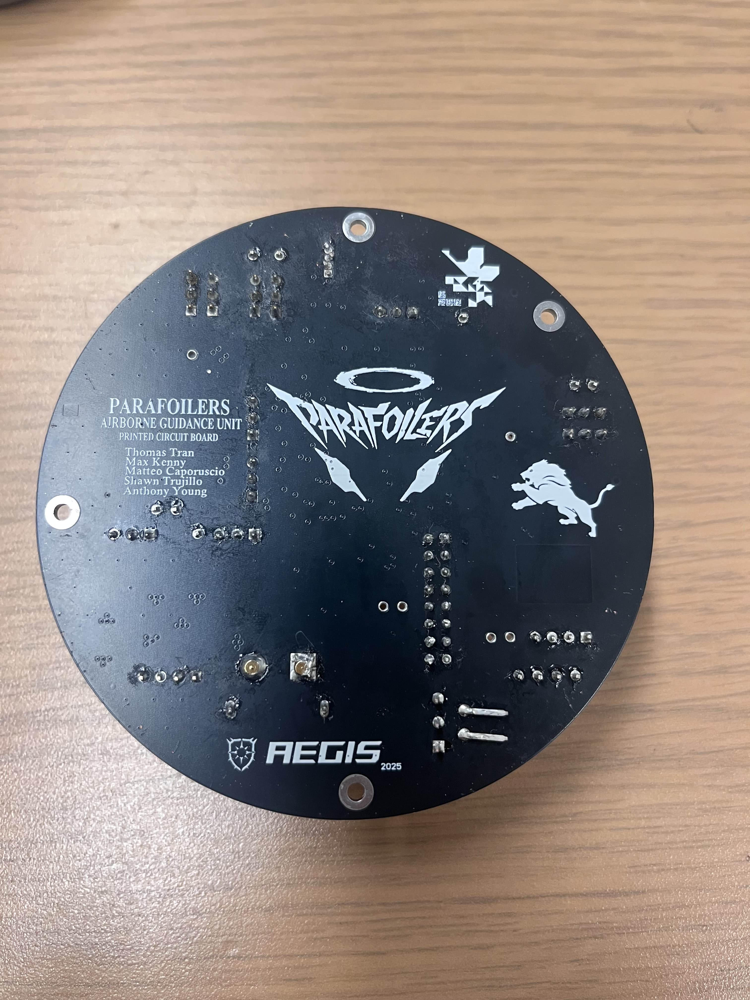

Project Overview
This project involved designing, building, and validating an autonomous Airborne Guidance Unit (AGU) capable of navigating a 5kg payload to a designated GPS coordinate. The system addresses the specific challenge of recovering high-altitude scientific payloads, which frequently drift off-course during unguided descent.
The final architecture is built entirely from the ground up, featuring a custom 4-layer PCB, a high-fidelity RF/inertial sensor suite, and a robust Guidance, Navigation, and Control (GNC) algorithm operating on FreeRTOS. During the final field validation, the system successfully navigated from a 75-meter drop height, dynamically correcting for wind shear, to land within a 5-meter radius of the target coordinate.

AGU Chassis & Actuation Rigging
Flight Validation
TEST_LOG: 2025-12-06 | WIND_CONDITIONS: MODERATE | DROP_ALT: 75M
// Phase 1: Autonomous Descent
Action: The AGU detects freefall via the IMU, stabilizes the payload, and begins actuating the left/right brake lines to execute calculated heading corrections against the wind vector.
// Phase 2: Precision Touchdown
Result: Final touchdown occurred < 5m from the target coordinate center. The system successfully demonstrated autonomous flaring and course lock in the final 10 meters.
Hardware Architecture




Click to inspect layout
Layer Stackup & EMI Shielding
Designed in Altium Designer utilizing a Ground-Signal-Power-Ground stackup. This configuration shields internal high-speed digital traces from external EMI, vital for the onboard RF modules. Inner layers utilize 2oz copper to easily handle high-current transients from the servo motors without severe thermal rise.
Power Distribution (Star Topology)
Implemented a Star Routing topology to isolate the noisy servo power rails from the sensitive 3.3V logic rails. This prevents inductive ground bounce and voltage sags caused by servo stall currents from resetting the STM32 core during stall flight maneuvers.
Active RF Front-End
Integrated a NEO-M9N GNSS receiver with a custom Bias-Tee circuit (27nH inductor & 100nF capacitor network). This injects clean, low-noise DC power (via an LT1764AET-3.3 LDO) into the active antenna coax while isolating the RF path back to the receiver.
Firmware & State Estimation
RTOS Architecture
The bare-metal firmware operates on an STM32H7, utilizing FreeRTOS to manage asynchronous sensor pipelines.
- Task_IMU (100Hz): High priority. Polls BNO085 via custom SPI driver. Handles SHTP protocol fragmentation/reassembly for zero data loss.
- Task_GPS (DMA): Parses binary UBX packets directly from UART via DMA. Extracts precise $V_{NED}$ vectors without blocking CPU cycles.
7-State Extended Kalman Filter
Designed a 7-state EKF targeting Position, Velocity, and Heading Bias. To optimize for the MCU's FPU, I implemented a Sequential Update mathematical model, processing GPS measurement scalars independently. This completely bypassed the need for expensive matrix inversions during the update step.
SYSTEM_FAILSAFE
Continuous geofence and sensor-health monitoring. Breaches trigger a hard "Deadspin" interrupt, forcing servos into a rapid spiral descent to prevent fly-aways.
Control Flow Architecture
Execution Rate: 100Hz